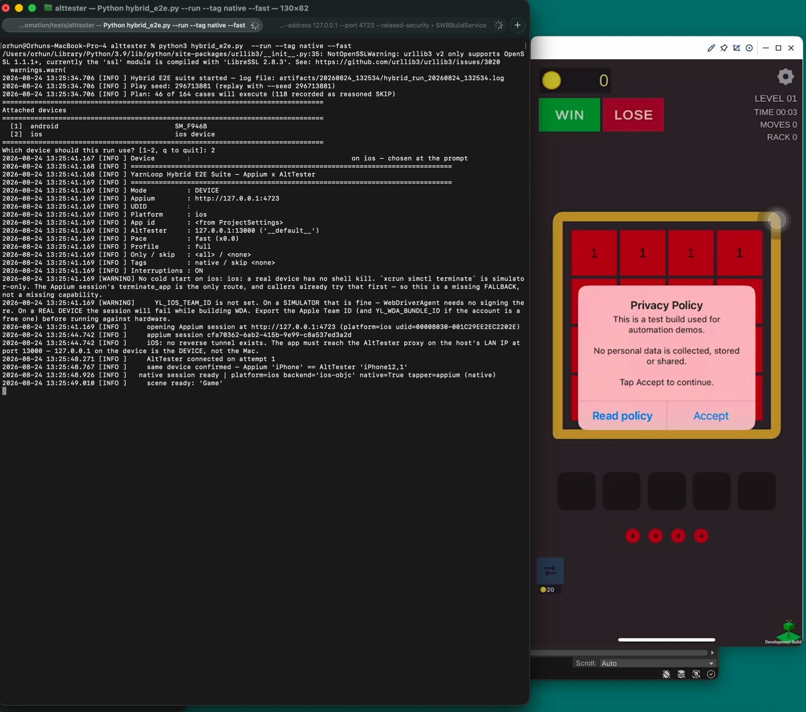
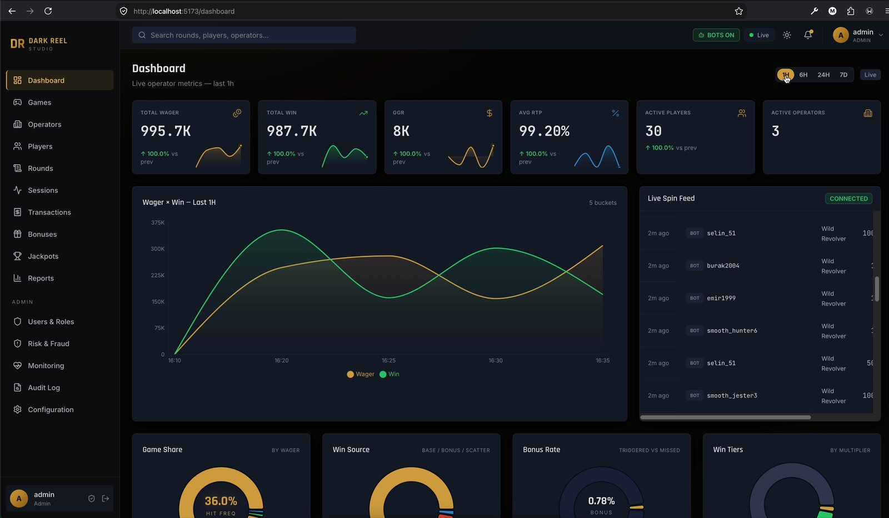

6+ yıldır yazılım test ediyorum. Test ettiğim sistemleri — ve onları test eden sistemleri — kendim de yazıyorum. I've been testing software for 6+ years. I also build the systems I test — and the systems that test them.
İki kişisel Ar-Ge projesi. Burada yalnızca özetleri var — mimari, ölçülmüş sonuçlar, bulgular ve ekran görüntüleri her projenin kendi sayfasında. Two personal R&D projects. Only the summaries live here — architecture, measured results, findings and screenshots are on each project's own page.

Bir Unity oyununu Appium ve AltTester ile aynı anda süren uçtan uca test altyapısı. Oyunu, 164 senaryoluk test paketini, raporlamayı ve gerçek cihazlarda koşan CI hattını sıfırdan kendim yazdım. An end-to-end test rig that drives a Unity game with Appium and AltTester at the same time. I wrote the game, the 164-case suite, the reporting and a CI pipeline that runs on real devices — all from scratch.

Üç Unity WebGL oyunu, üç .NET servisi, 15 modüllü yönetim paneli, oyuncu sitesi ve HMAC imzalı cüzdan entegrasyonu. Sunucu otoriteli, seed'li, her turu replay edilebilir — QA gözüyle tasarlanmış uçtan uca bir iGaming sistemi. Three Unity WebGL games, three .NET services, a 15-module backoffice, a player site and HMAC-signed wallet integration. Server-authoritative, seeded, every round replayable — an end-to-end iGaming system designed with a QA eye.
İşe alım süreçlerinde hazırladığım QA case study çalışmaları. İkisi de gerçek bir ürün üzerinden test analizi, senaryo tasarımı ve raporlama içeriyor — nasıl düşündüğümü görmek için en doğrudan kaynak. QA case studies I prepared during hiring processes. Both cover test analysis, scenario design and reporting on a real product — the most direct look at how I think.
Mobil oyun üzerine test analizi ve senaryo tasarımı çalışması. Google Sheets — yeni sekmede açılır.Test analysis and scenario design on a mobile game. Google Sheets — opens in a new tab.
↗ Case study'yi açOpen the case studyCasual oyun üzerine test durumu tasarımı ve hata raporlama çalışması. Google Sheets — yeni sekmede açılır.Test case design and defect reporting on a casual game. Google Sheets — opens in a new tab.
↗ Case study'yi açOpen the case studyGereksinimden test durumuna kadar olan süreci uçtan uca yürütürüm: test analizi, teknik seçimi, senaryo tasarımı, koşum, raporlama ve çözüm takibi. I own the path from requirement to test case end to end: analysis, technique selection, scenario design, execution, reporting and defect follow-through.
Denklik paylaştırma, sınır değer analizi, karar tablosu. Pozitif, alternatif ve negatif senaryo tasarımı; test datası hazırlama; senaryoların risk ve önem sırasına göre önceliklendirilmesi. Feature, regresyon, smoke, exploratory ve prod doğrulama setleri. Equivalence partitioning, boundary value analysis, decision tables. Positive, alternative and negative scenario design; test data preparation; prioritising by risk and importance. Feature, regression, smoke, exploratory and production-verification sets.
Selenium WebDriver ile web UI regresyonu; Appium ve AltTester ile mobil ve oyun otomasyonu; GitHub Actions ile CI hattına entegrasyon ve self-hosted runner kurulumu. Koşum raporlarının incelenip hata kaydına dönüştürülmesi. Web UI regression with Selenium WebDriver; mobile and game automation with Appium and AltTester; CI integration and self-hosted runners on GitHub Actions. Turning run reports into actionable defect records.
Postman ve Swagger UI ile REST; sıfırdan XML request kurgulayarak SOAP servis testleri. MS SQL, MySQL, MongoDB ve Redis üzerinde sorgu yazarak servis hareketlerinin veritabanı ve arayüz tarafındaki yansımalarını doğrulama; Kafka ve Elasticsearch ile olay tabanlı akış ve log analizi. REST with Postman and Swagger UI; SOAP testing by hand-building XML requests. Writing queries against MS SQL, MySQL, MongoDB and Redis to verify that service activity is reflected correctly in the database and the UI; event-driven flow and log analysis with Kafka and Elasticsearch.
Bahis ve kazanç akışları, payout doğrulaması, bakiye ve cüzdan tutarlılığı, masa/oda yönetimi. Core gameplay loop, booster, engel ve ödül yapıları; event ve LiveOps içerikleri; A/B testleri ve segment doğrulamaları. Bet and win flows, payout verification, balance and wallet consistency, table/room management. Core gameplay loop, boosters, blockers and reward structures; events and LiveOps content; A/B tests and segment validation.
POS terminal entegrasyonlarının backend akışları, web ödeme akışları ve ödeme sağlayıcı entegrasyonları. Uygulama içi satın alma (IAP): ürün ve teklif konfigürasyonu, satın alma geri yükleme, iptal ve hata senaryoları, paywall ve fiyat kurgusu. Backend flows for POS terminal integrations, web payment flows and payment-provider integrations. In-app purchases: product and offer configuration, restore, cancellation and failure scenarios, paywall and pricing setup.
Test stratejisi ve kalite standardı oluşturma, test uzmanı mülakatı ve onboarding, süreç iyileştirme, go/no-go kararına destek. TestRail, Jira ve Azure DevOps üzerinde test case havuzu ve koşum yönetimi; UAT koordinasyonu ve sürüm sahipliği. Defining test strategy and quality standards, interviewing and onboarding testers, process improvement, supporting go/no-go decisions. Test case pools and run management in TestRail, Jira and Azure DevOps; UAT coordination and release ownership.
| Test yönetimiTest management | TestRail · Jira · Azure DevOps (Boards & Test Plans) · Confluence · Trello · Miro |
| API & veritabanıAPI & database | Postman · Swagger UI · SOAP/XML · MS SQL · MySQL · MongoDB · Redis · Kafka · Elasticsearch |
| Otomasyon & CI/CDAutomation & CI/CD | Selenium WebDriver · Appium · AltTester · TestProject · GitHub Actions · Python · Bash |
| PerformansPerformance | JMeter · k6 · Unity Profiler · Xcode Instruments · Android GPU Inspector · GameBench |
| Mobil & oyunMobile & games | Xcode · Android Studio · Unity Editor · Firebase App Distribution · XCUITest · uiautomator2 |
| İzleme & analitikMonitoring & analytics | Sentry · Crashlytics · Firebase · Amplitude · AppLovin · Keycloak |
| Web & tarayıcıWeb & browser | Chrome DevTools · Chrome / Safari / Firefox / Edge · responsive ve mobil tarayıcı testleriresponsive and mobile browser testing |
| Bulut & ödemeCloud & payments | AWS (EC2, GameLift) · GCP · Docker · Stripe · App Store / Google Play IAP · Adapty |
Şans oyunları, mobil oyun, web ve kurumsal yazılım projelerinde QA. QA across gambling, mobile games, web and enterprise software.
Tam özgeçmişimi aşağıdan okuyabilir veya PDF olarak indirebilirsiniz. Read my full CV below, or download it as a PDF.
Özgeçmişin tamamı 3 sayfalık bir PDF. Küçük ekranlarda okumak için açmanız daha rahat olur.The full CV is a 3-page PDF. On a small screen it reads better opened directly.
Turkish Testing Board · Aralık 2024Turkish Testing Board · December 2024
Sertifikayı doğrula →Verify certificate →
Marmara Üniversitesi · 2016Marmara University · 2016
İstanbul Gedik Üniversitesi · Beden Eğitimi Öğretmenliği ve Antrenörlük · 2012 – 2016Istanbul Gedik University · Physical Education Teaching & Coaching · 2012 – 2016
QA, test otomasyonu ve oyun kalitesi üzerine konuşmaya her zaman açığım. En hızlı ulaşım e-posta ile. Always happy to talk about QA, test automation and game quality. Email is the fastest way to reach me.
Bu sayfadaki iki proje de bana ait kişisel çalışmalardır ve depoları özeldir. Kodu, mimariyi veya test paketini birlikte incelemek isterseniz memnuniyetle bir oturum ayarlarım. Both projects on this page are my own personal work and their repositories are private. If you'd like to walk through the code, the architecture or the test suite together, I'm glad to arrange a session.